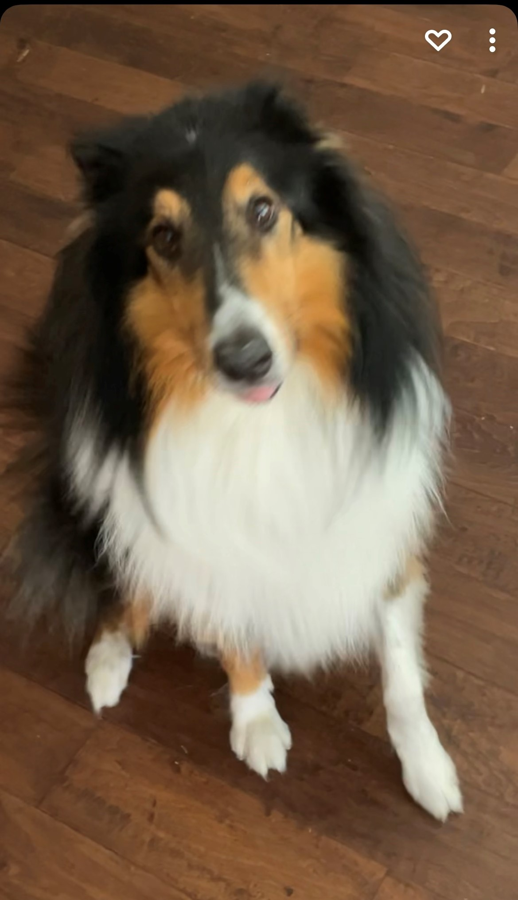

About Me

I am currently a student at Texas A&M pursuing a computer science degree.
Currently, I am enrolled in several high-level programming courses, and I
have learned so much about my major. From algorithms to graphics to websites,
I have enjoyed all these aspects of computer science. However, in the future,
if I could choose a specialty in CS, I would like to be a programmer dealing
with AI technology. I am very passionate about coding, and I continuously
make efforts to become a better programmer. For example, in my free time,
sometimes I’ll decide to do a few coding problems on LeetCode, just to keep
my technical skills fresh. I do this because I love the feeling of figuring
out ways to solve problems, since I am a very analytical and competitive
person. Also, I have a coding background in multiple programming languages,
and I adapt and learn new coding languages quickly.
While I don’t have any outstanding achievements yet, I am proud of the fact
that I am learning so much about programming in my CS courses. Also, I think that
I’m really good in team oriented projects, and am someone that believes that
being nice and respectful goes a long way in making team projects go smoothly.
Furthermore, my desire for a steady schedule and workflow has helped teams
that I have been in the past to keep up with the work and not fall behind.
There are a few professional goals that I want to achieve in the future.
First, I’d like to be an intern for a tech company this upcoming summer,
as I’d love to see what corporate culture is all about, and I also want
to improve my technical skills whether that be coding or team skills.
Eventually, I want to pursue a career in AI programming at a major
tech company and I am working hard towards this goal. To the left is my dog